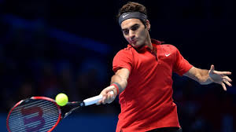
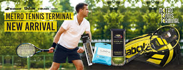

TOP PLAYER this MONTH!
Nov 5, 2019
Roger Federer.
Roger Federer, mantan nomer 1 tennis kelas dunia dan lagenda tennis, memakai produk dari Wilson Tennis. Federer dikenal sudah memakai produk Wilson sejak debut karier pertama kalinya sejak tahun 1998, kini ia sudah menjalin kerja sama dengan Wilson di banyak kejuaraan. AYO cek Produk yang di pakai Roger Federer ini
New Arrival
Nov 5, 2019
all new, BABOLAT TENNIS
Telah Datang, Babolat Aero Drive kini hadir dengan smart tennis sensor system terbaru. Aero Drive Babolat akan memberikan anda pengalaman baru dalam mengolah bola spin anda menjadi semakin cepat kencang, dan luar biasa. GO GRAB NOW !!!.